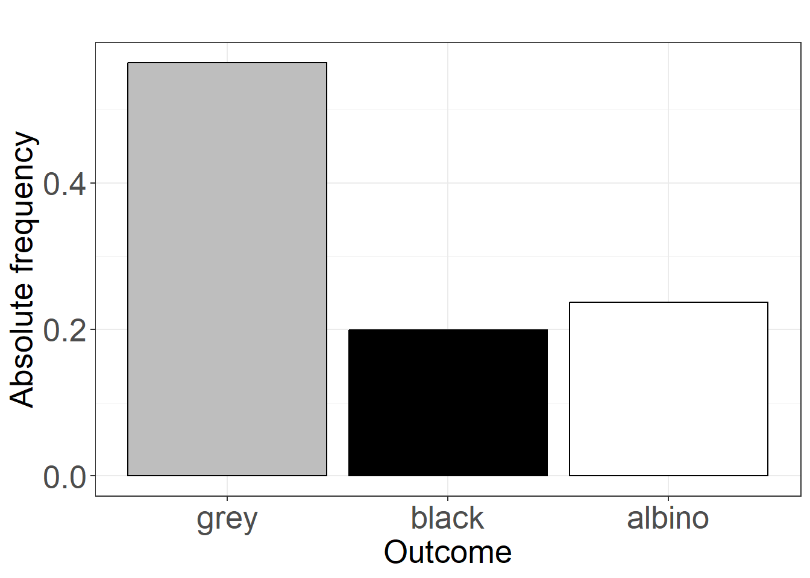
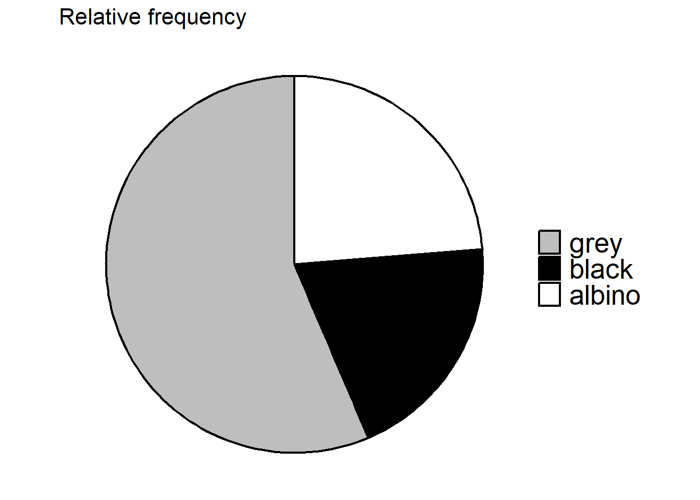
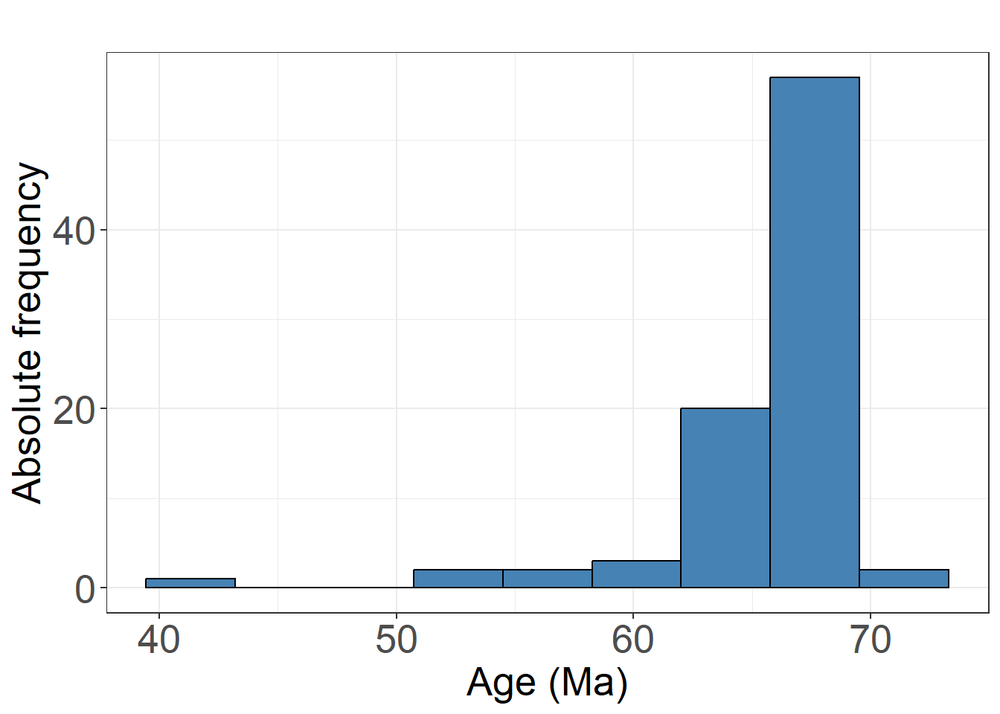
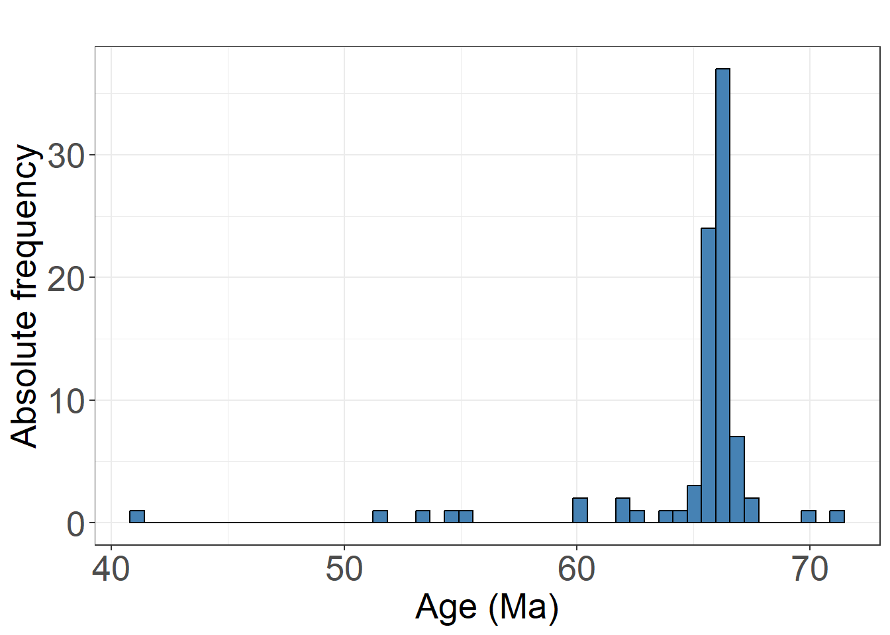
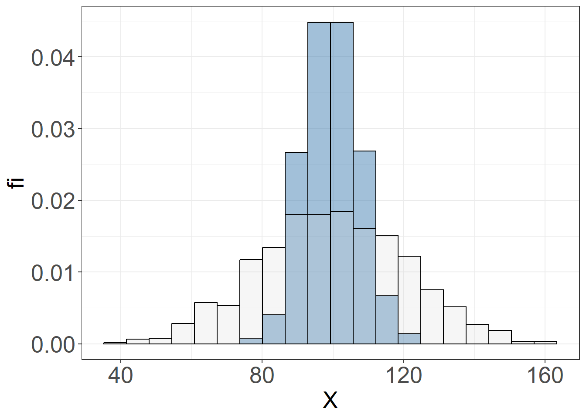
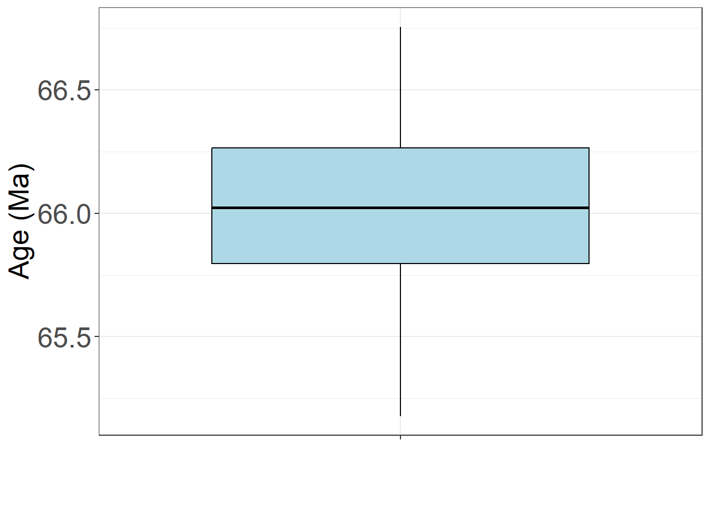
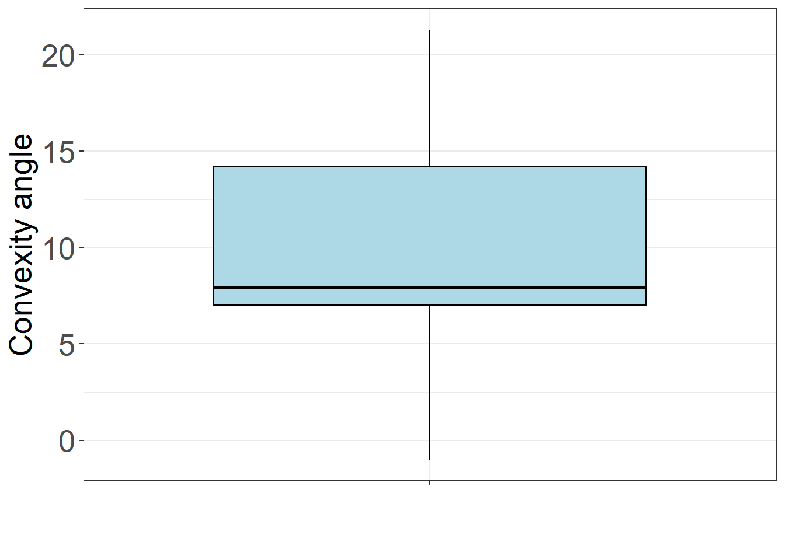

Chapter 2 Data description
Data refers to the yield of observation through measurement. The experimental scientist’s interaction with nature, achieved through the meticulous collection of data, forms the foundation of scientific knowledge. However, data is often collected with a specific purpose in mind. We aim to understand the natural processes that generate the data and the extent to which these processes depend on the particular experimental setup.
Observation and abstraction are thus intertwined in the scientific method, and statistics provides a systematic approach to addressing both. To explain statistical methods, we adopt the practical perspective that data are objects of observation, while models are objects of abstraction.
In this chapter, we will introduce tools for describing data. These tools include tables, figures, and descriptive statistics that summarize central tendency and dispersion. Before any explanation can be drawn from data, the data itself must first be observed. The goal is to develop an initial intuition by displaying the data in various forms, which will help us determine whether the questions we intend to ask are appropriate or whether we should explore new ones.
By exploring meaningful real data on Mendelian inheritance, misophonia and dinosaur extinction, we will also introduce key statistical concepts such as random experiments, observations, outcomes, and absolute and relative frequencies.
2.1 Scientific method
One of the goals of the scientific method is to provide a framework for solving problems that arise in the study of natural phenomena or in the design of new technologies.
Natural philosophers, and latter scientist, have developed a method over thousands of years to study natural phenomena. The method, which is continuously under development, can be associated with three different human activities:
- Observation characterized by the acquisition of data
- Reasoning characterized by the development of mathematical models
- Action characterized by design of new experiments or technologies
Their complex interaction and results are the basis of the scientific activity.

To our understanding, statistics deals with the interaction between models and data (the bottom part of the figure).
Typical statistical questions are:
- What is the best model for my data (inference)?
- What are the data that a certain model would produce (prediction)?
The substantive knowledge of scientific research—whether physical, chemical, biological, or otherwise—is derived from specific experiments conducted on phenomena of interest, most likely under a controlled lab environment. This represents the upper part of the triangle, where the research methods and technologies of various scientific disciplines can be situated.
2.2 Data
The data is presented in the form of observations.
An observation or realization is the acquisition of a number or characteristic from an experimental run. We may also think of the result of a measuring process.
For example, let us take the series of numbers produced by repeating an experiment, such as trying to start a newly assembled engine (1: success of starting an engine, 0: failure of starting it).
\[1, 0, 0, 1, 0, \mathbf{1}, 0, 1, 1, ...\]
The number one in bold is an observation from the sixth repeat of the experiment. That is, in that particular trial, we were able to start the engine.Remember that the observation is concrete, it is the number you get one day in the laboratory. An observation is the recording of a particular and concrete event, located in space and time. Observations can only be obtained by experiments.
By contrast, an outcome is a possible observation that could result from the experiment. No need to run the experiment to know the possibilities. Before we even run the first trial, we know that either the engine starts or not. In the example, the number 1 marks one of the possible observations (success), 0 is the other one (failure). The outcome of an experiment is abstract. We can obtain them by reasoning, no need to go to the lab. As such, the outcomes are general characteristics of the experiments we run. An outcome is a universal abstract entity, with no location in space and time.
2.3 Types of outcomes
In statistics we are mainly interested in two types of outcomes.
Categorical: If the outcome of an experiment is a quality. They can be nominal (binary: yes, no; multiple: colors) or ordinal, when the qualities can be ranked (severity of a disease, emergency grades).
Numeric: If the outcome of an experiment is a number. The number can be discrete (number of messages received in an hour, number of leukocytes in the blood) or continuous (battery charge status, engine temperature).
2.4 Random experiments
We may boldly say that the subject matter of statistics is the gaining of knowledge from random experiments, the means by which we produce data.
Definition:
A random experiment is an experiment that gives a different result or outcome when repeated in the same way.
Random experiments are of different types, depending on how they are conducted:
- on the same object (person): temperature, sugar levels.
- on different objects (animals): the weight of an animal.
- on events (climate phenomena): the number of hurricanes per year.
2.5 Absolute frequencies
When we repeat a random experiment with categorical outcomes, we make a list of the results. We summarize the observations by counting how many times we saw a particular outcome.
For instance we compute the absolute frequency:
\[n_i\]
which is simply the number of times we observe the result \(i\).
Example (mouse coating)
Consider one version of the timeless random experiment of obtaining varying offspring from the same reproducing couple. Suppose we breed one male and one female mouse, both with grey coats, and observe the resulting coat color of their offspring.
A fine controlled experiment of a suitable couple was run by Crampe, which was latter reported by Allen in 1904 (Allen 1904). Crampe repeated the experiment \(156\) times, that is, he produced \(156\) mouse off-spring from the same pair and recorded their color. The results, however, did not appear to strictly follow Mendel’s rules of recessive inheritance for albinism, and at the time no detailed explanation of the full series was provided. Similar patterns of non-Mendelian inheritance were first explained in 1909 through Bateson’s concept of epistasis (i.e., allele interaction) and, in the specific case of mouse coat colors, by Little in 1914 (Little 1914).
When we look at Crampe’s mice, while most of the offspring have grey coats, several siblings are also black and albino. These are the results of the repetition of the random experiment
black, grey, black, albino, grey, grey, grey, grey, grey, black, grey, grey, grey, grey, grey, albino, grey, grey, grey, grey, grey, grey, black, grey, albino, grey, grey, albino, grey, black, black, grey, albino, albino, grey, albino, black, grey, grey, albino, grey, black, black, albino, albino, grey, albino, black, grey, black, black, black, grey, grey, grey, grey, black, black, albino, black, albino, black, black, albino, grey, grey, grey, grey, grey, albino, black, albino, grey, grey, grey, grey, grey, albino, albino, grey, grey, albino, albino, grey, grey, albino, black, black, grey, grey, black, albino, grey, albino, black, grey, grey, grey, grey, black, albino, grey, grey, grey, grey, black, grey, grey, grey, albino, black, albino, black, albino, grey, grey, grey, grey, grey, grey, grey, grey, albino, albino, grey, grey, grey, grey, grey, grey, black, grey, grey, grey, grey, albino, albino, black, albino, grey, albino, grey, albino, black, albino, grey, grey, grey, grey, albino, grey, grey, grey, grey, albino, black
Each experiment was the production of a specimen from the same grey couple and its color being recorded. The first black in the list is the observation of the first run of the random experiment (the first listed offspring of the couple). The last black is the observation number \(156\).
We can list the observations using a frequency table of the outcomes (categories), observing high variability in the color of the offspring
\[ \begin{array}{cc} \mathbf{outcome} & \mathbf{n_i} \\ \text{grey} & 88 \\ \text{black} & 31 \\ \text{albino} & 37 \\ \end{array} \]
The table summarizes the outcomes (first column) and the corresponding observations (second column). From the table, we can see that, for example, \(n_1=88\) represents the total number of grey mice observed. Additionally, we note that the total number of offspring is given by
\[\sum_{i=1}^m n_i= n = 156,\] where \(m=3\) is the number of outcomes (the number of rows in the table), and \(n=156\) is the total number of observations (repetitions of the random experiment).
The frequency table in the example illustrates the well-known inheritance pattern of hybrid grey parents, which carry two versions of the C gene—grey (dominant) and black (recessive)—and two versions of another gene, A, associated with normal pigmentation (dominant) and albinism (recessive). This phenomenon, known as recessive epistasis, occurs when the offspring inherits the albinism mutation in gene A from both parents, thereby interfering with—or masking—the expression of grey or black coloration determined by gene C (Little 1914). Mechanistically, the protein encoded by the albino gene inhibits pigmentation driven by the color gene.
2.6 Relative frequencies
We can also summarize the observations by calculating the proportion of how many times we saw a particular result.
\[f_i = \frac{n_i}{n}\]
In our example, \(n_1=88\) grey mice were recorded, so we can ask about the proportion of grey from the total number of offspring observed: \(156\). We can copy these proportions \(f_i\) in the frequency table.
\[ \begin{array}{ccc} \mathbf{outcome} & \mathbf{n_i} & \mathbf{f_i} \\ \text{grey} & 88 & 0.56 \\ \text{black} & 31 & 0.20 \\ \text{albino} & 37 & 0.24 \\ \hline \mathbf{sum} & 156 & 1 \\ \end{array} \]
\(56\%\) of mice were grey. Relative frequencies are fundamental in statistics. They represent the proportion of one outcome relative to the other outcomes. Later, we will understand them as observations of quantities that provide empirical information about probabilities, which are abstract, unobserved but knowable properties of the random experiment.
In the mouse coat color example, the probabilities are derived from an inheritance model of recessive epistasis for albinos that states that the ratio of color outcomes is 9:3:4 for grey, black, and albino, respectively. This ratio have ideal frequencies \((0.5625, 0.1875, 0.25)\) for each outcome. No need to go into further genetics theory yet. However, while we will formally define probabilities in the following chapter, the point here is to note that probabilities are expected unobserved frequencies derived through reasoning, whereas relative frequencies are their observed empirical counterparts, obtained only through experimentation.
The numerical values of probabilities and relative frequencies often differ; expectation is not usually matched by observation. For instance, consider the relative frequencies obtained by Crampe: \((0.56, 0.20, 0.24)\). These are close to, but not identical with, those predicted by the model of recessive epistasis, where albinism and color are determined by different genes.
The available interpretation in Crampe’s time was that of Mendelian recessive inheritance, in which two variants of a single gene lead to either albinism or black coloration, and grey color occurs when the two variants are inherited from one parent each. The expected Mendelian frequencies in this model are: \((0.5, 0.25, 0.25)\), also close to Crampe’s data, though slightly less so than the epistatic model proposed by Little.
For absolute and relative frequencies, we have the important properties
\[\sum_{i=1}^m n_i = n\]
and
\[\sum_{i=1}^m f_i = 1\]
where \(m\) is the number of outcomes.
2.7 Bar chart
When we have a lot of outcomes and want to see which ones are most likely, we can use a bar chart. This is a plot of the frequencies \(n_i\) Vs the outcomes \(i\).

2.8 Pie chart
We can also visualize the relative frequencies \(f_i\) using a pie chart.
In the pie chart, the area of the circle represents the 100% of the observations (proportion = 1) and the sections represent the relative frequencies of each outcome.

2.9 Ordinal categorical outcomes
The color of a mouse in the example above is a categorical nominal variable. Each observation belongs to a category (quality). The categories do not always have a certain order.
Sometimes categorical outcomes can be sorted when they have a natural ranking. This allows you to compute cumulative frequencies.
Example (misophonia)
A typical clinical study involves standardized measurements across multiple subjects or patients, often under controlled conditions. While individuals are clearly distinct, their observations are treated as statistically equivalent, meaning they are representative of the same random experiment that could be repeated for the same class of individuals.
This concept can be generalized to other scientific fields where experiments are conducted on specimens representing their respective classes. For example, consider measuring the hardness of an alloy. If the underlying experiment differs—either because the specimens belong to different classes (e.g., different alloys) or the measurement conditions (e.g., temperature) have changed—data interpretation and description must be adjusted accordingly.
In a clinical study run in Barcelona in \(2019\), \(123\) patients referred to a clinical psychologist for anxiety disorders were examined for their degree of misophonia. Misophonia is an involuntary experience of anxiety or anger triggered by specific sounds, and it may affect up to \(5\%\) of the population, often without their awareness. The study aimed to evaluate the risk factors and onset mechanisms associated with misophonia, a poorly recognized disorder at the time.
Each patient included in the study, was evaluated with the misophomia questionnaire AMISO, that scores patients into \(4\) different groups according to severity.
The results of the AMISO tests are
4, 2, 0, 3, 0, 0, 2, 3, 0, 3, 0, 2, 2, 0, 2, 0, 0, 3, 3, 0, 3, 3, 2, 0, 0, 0, 4, 2, 2, 0, 2, 0, 0, 0, 3, 0, 2, 3, 2, 2, 0, 2, 3, 0, 0, 2, 2, 3, 3, 0, 0, 4, 3, 3, 2, 0, 2, 0, 0, 0, 2, 2, 0, 0, 2, 3, 0, 1, 3, 2, 4, 3, 2, 3, 0, 2, 3, 2, 4, 1, 2, 0, 2, 0, 2, 0, 2, 2, 4, 3, 0, 3, 0, 0, 0, 2, 2, 1, 3, 0, 0, 3, 2, 1, 3, 0, 4, 4, 2, 3, 3, 3, 0, 3, 2, 1, 2, 3, 3, 4, 2, 3, 2
Each observation is, therefore, the result of the run of one particular random experiment: the measurement of the level of misophonia in a patient. This data series can be summarized using the frequency table
\[ \begin{array}{ccc} \mathbf{outcome} & \mathbf{n_i} & \mathbf{f_i} \\ 0 & 41 & 0.33333333 \\ 1 & 5 & 0.04065041 \\ 2 & 37 & 0.30081301 \\ 3 & 31 & 0.25203252 \\ 4 & 9 & 0.07317073 \\ \hline \mathbf{sum} & 123 & 1 \end{array} \]
We say that about \(25\%\) of the patients in the study had misophonia grade \(3\), or that the outcome of grade \(3\) was observed with \(25\%\) frequency. Note that the rows of table are now ordered by the severity of the disease.
2.10 Absolute and relative cumulative frequencies
Misophonia severity is categorical and ordinal because its outcomes can be meaningfully ordered by their degree.
When the outcomes of a random experiment can be ordered, it is useful to ask how many observations were obtained up to a given outcome. We call this number the absolute cumulative frequency up to the outcome \(i\), and compute it with sum the relative frequencies up to \(i\) \[N_i =\sum_{k= 1}^i n_k\] It is also useful to calculate the proportion of observations up to a given result.
\[F_i =\sum_{k= 1}^i f_k\] This is called the relative cumulative frequency, or frequency distribution of the data.
We can add these frequencies to the frequency table
\[ \begin{array}{ccccc} \mathbf{outcome} & \mathbf{n_i} & \mathbf{f_i} & \mathbf{N_i} & \mathbf{F_i}\\ 0 & 41 & 0.33333333 & 41 & 0.3333333\\ 1 & 5 & 0.04065041 & 46 & 0.3739837\\ 2 & 37 & 0.30081301 & 83 & 0.6747967\\ 3 & 31 & 0.25203252 & 114& 0.9268293\\ 4 & 4 & 0.07317073 & \mathbf{123} & \mathbf{1}\\ \end{array} \]
Therefore, 67% of patients had misophonia up to severity 2, and 37% of patients had severity less than or equal to 1.
2.11 Cumulative frequency graph
\(F_i\) is an important quantity because it allows us define the accumulation of frequencies up to intermediate levels of the outcomes.
The frequency up to an intermediate level \(x\) (\(i\leq x< i+1\)) is just the accumulation up to the lower possible outcome of the experiment \[F_x = F_i\]
\(F_x\) is therefore a function on a continuous range of values. We can draw it with respect to the outcomes; for instance, for the misophonia example

Therefore, we can say that \(67\%\) of the patients had misophonia up to severity \(2.3\), even though \(2.3\) is not an observed outcome.
2.12 Numerical outcomes
The result of a random experiment can produce a number. If the number is discrete, we can generate a frequency table, with absolute, relative, and cumulative frequencies, and illustrate them with bar, pie, and cumulative charts.
When the outcome is continuous the frequency table is not so useful, because it is unlikely to obtain a repetition of the same continuous number, to arbitrary small precision.
Example (Dinosaur extinction)
The Alvarez hypothesis states that the mass extinction in the Cretaceous-Paleocene boundary, \(\sim 66\) million of years ago (Ma), was due to the impact of a large meteorite in Yucatan’s peninsula. Alvarez and son discovered a layer of extraterrestrial iridium, presumably from the meteorite, uniformly distributed around the globe at the depth close to the time of the extinction. A rival theory explained a gradual extinction by unprecedented volcanic activity, as the impact appeared to precede extinction in 300,000 years. After 30 years of dispute, Renne et al designed a method to precisely measure the age of collected geological samples (Renne et al. 2013), by assessing the quantity of radioactive potassium degradation into argon in impact melt droplets (tektites).
These were the ages in Ma of \(87\) tektites specimens for one of the experiments reported by Renne and colleagues:
65.664, 64.492, 66.239, 66.677, 66.137, 65.406, 65.980, 64.979, 66.302, 65.975, 66.252, 67.492, 65.792, 66.328, 65.975, 65.740, 66.462, 66.287, 67.281, 54.619, 40.915, 66.444, 65.710, 55.046, 65.463, 66.378, 65.774, 67.044, 65.756, 66.754, 65.809, 66.386, 51.835, 65.624, 63.565, 65.179, 65.896, 65.825, 66.257, 65.990, 65.421, 53.258, 66.884, 65.912, 65.693, 66.087, 65.857, 65.992, 65.916, 65.723, 66.275, 65.441, 66.630, 66.097, 69.700, 66.011, 66.218, 66.737, 60.071, 65.800, 62.429, 66.308, 67.036, 59.836, 66.149, 65.928, 65.951, 66.077, 70.980, 66.060, 66.207, 61.905, 66.055, 65.205, 66.433, 66.085, 66.001, 62.098, 66.064, 66.368, 66.348, 65.693, 66.035, 66.040, 66.27, 65.739, 66.023
If we look in detail these set of observations, we see that only two outcomes were repeated at \(65.693\) and \(65.975\), each. These are the result of measurement rounding or limited instrument resolution. While there was one single event that give rise to similar ages of the tektites, potassium decay into argon depends on so many factors that it is unlikely that two specimens have the same estimated aging, if we had sufficient resolution.
2.13 Transforming continuous data
Since observations of continuous outcomes cannot be counted in frequencies (at least by definition), we may transform them into ordered categorical outcomes. We do it in two steps:
- First, we cover the range of observations in regular intervals of the same size (bins)
[40.9,43.9], (43.9,46.9], (46.9,49.9], (49.9,52.9], (52.9,55.9], (55.9,59], (59,62], (62,65], (65,68], (68,71]
- Then, we map each observation to its interval: creating a categorical ordered outcomes; in this case, we have \(10\) possible outcomes
(65,68], (62,65], (65,68], (65,68], (65,68], (65,68], (65,68], (65,68], (65,68], (65,68], (65,68], (65,68], (65,68], (65,68], (65,68], (65,68], (65,68], (65,68], (65,68], (52.9,55.9], [40.9,43.9], (65,68], (65,68], (52.9,55.9], (65,68], (65,68], (65,68], (65,68], (65,68], (65,68], (65,68], (65,68], (49.9,52.9], (65,68], (62,65], (65,68], (65,68], (65,68], (65,68], (65,68], (65,68], (52.9,55.9], (65,68], (65,68], (65,68], (65,68], (65,68], (65,68], (65,68], (65,68], (65,68], (65,68], (65,68], (65,68], (68,71], (65,68], (65,68], (65,68], (59,62], (65,68], (62,65], (65,68], (65,68], (59,62], (65,68], (65,68], (65,68], (65,68], (68,71], (65,68], (65,68], (59,62], (65,68], (65,68], (65,68], (65,68], (65,68], (62,65], (65,68], (65,68], (65,68], (65,68], (65,68], (65,68], (65,68], (65,68], (65,68]
Therefore, instead of saying that the first tektite had an age of \(65.664\) million of years, we say that its age is in the interval (or bin) between \((65,68]\).
2.14 Frequency table for a continuous variable
For a given regular partition of the range of the continuous outcomes into intervals, we can produce a frequency table as before
\[ \begin{array}{ccccc} \mathbf{outcome} & \mathbf{n_i} & \mathbf{f_i} & \mathbf{N_i} & \mathbf{F_i}\\ \mathrm{[40.9,43.9]} & 1 & 0.01149425 & 1 & 0.01149425 \\ \mathrm{(43.9,46.9]} & 0 & 0.00000000 & 1 & 0.01149425 \\ \mathrm{(46.9,49.9]} & 0 & 0.00000000 & 1 & 0.01149425 \\ \mathrm{(49.9,52.9]} & 1 & 0.01149425 & 2 & 0.02298851 \\ \mathrm{(52.9,55.9]} & 3 & 0.03448276 & 5 & 0.05747126 \\ \mathrm{(55.9,59]} & 0 & 0.00000000 & 5 & 0.05747126 \\ \mathrm{(59,62]} & 3 & 0.03448276 & 8 & 0.09195402 \\ \mathrm{(62,65]} & 4 & 0.04597701 & 12 & 0.13793103 \\ \mathrm{(65,68]} & 73 & 0.83908046 & 85 & 0.97701149 \\ \mathrm{(68,71]} & 2 & 0.02298851 & \mathbf{87} & \mathbf{1} \\ \end{array} \]
We see that \(83\%\) of the tektites had an age at this interval, already overlapping with the age of extinction; estimated at \(65.957\)Ma by fossil records. We still need some conceptual and analytic tools to be able to compare the true aging of two unobserved events, the extinction onset and meteorite impact, but tektite data give us the strong intuition that they were simultaneous in geological scale, and therefore that the meteorite was one of the causes of extinction.
2.15 Histogram
The histogram is the graph of the absolute (\(n_i\)) or relative \(f_i\) frequencies against the interval outcomes (bins). The histogram depends on the size of the bin.

The following is a histogram with \(50\) bins

We see, for instance, that the most frequent estimated impact age is close to \(66\)Ma, the age of extinction. The data already suggest that the meteorite impact and the dinosaur extinction are likely simultaneous events.
2.16 Cumulative frequency graph
We can also plot \(F_x\) against the outcomes. Since \(F_x\) has a continuous range, we can order the observations (\(x_1 <... x_j < x_{j+1} < x_N\)) and therefore
\[F_x = \frac{k}{N}\]
for \(x_{k} \leq x < x_{k+ 1}\) .
\(F_x\) is known as the distribution of the data. \(F_x\) does not depend on the size of the bin. However, its resolution depends on the amount of data.

We therefore see a steep increase in the number of observations between \(65\) and \(67\)Ma.
2.17 Summary Statistics
Summary statistics are numbers calculated from the data that tell us important characteristics of the numerical outcomes (discrete or continuous).
For example, we have statistics that describe extreme values:
- minimum: the minimum observation.
- maximum: the maximum observation.
2.18 Average (sample mean)
An important statistic that describes the central value of the observations (where to expect most observations) is the average
\[\bar{x}=\frac{1}{N} \sum_{j=1}^N x_j\]
where \(x_j\) is the observation \(j\) from a total of \(N\) observations. We also call the average the sample mean. The sample is the set of observations, or the data obtained from the repetition of the random experiment.
Example (Dinosaur extinction)
The average estimated age for the deadly meteorite impact from tektites can be calculated directly from the observations in the usual way
\(\bar{x}= \frac{1}{ N}\sum_j x_j\)
\(= \frac{1}{87}(65.664 + 64.492 + 66.239... + 66.023) = 64.99741\)
The average is nearly a million years more recent than the start of the extinction. We will see that, under reasonable models and conditions, the average is an estimation that we can trust. We will say that it is the maximum likelihood value for the true aging. In this example, we can readily make some objections to this, as some few estimated ages appear to be excessively recent (\(40\)Ma) or excessively old (\(70\)Ma). As these observations do not gather with most of them, we have reasons to believe that they are not representative of the same potassium decay process that can age the impact, or that they are not suitable repetitions of the random experiment in question. Collection of those samples, processing of the material or potassium decay conditions may have substantially affected those specimens.
Now let us look as the average of categorically ordered outcomes. For these cases, it is insightful to show that we can also use the relative frequencies to calculate the average
\(\bar{x}=\frac{1}{ N}\sum_{i=1}^N x_j =\frac{1}{N}\sum_{i=1}^M x_i n_ {i}=\)
\[\sum_{i=1}^M x_i f_{i}\]
where we went from adding \(N\) observations to adding \(M\) outcomes.
The form \(\bar{x}= \sum_{i = 1}^M x_i f_i\) shows that the average is the center of mass of the data. As if each observation had a mass weight given by \(f_i\).
Example (misophonia)
The average severity of misophonia in the study can be calculated from the relative frequencies of the outcomes
\[ \begin{array}{ccc} \mathbf{outcome} & \mathbf{n_i} & \mathbf{f_i} \\ 0 & 41 & 0.33333333 \\ 1 & 5 & 0.04065041 \\ 2 & 37 & 0.30081301 \\ 3 & 31 & 0.25203252 \\ 4 & 9 & 0.07317073 \end{array} \]
\(\bar{x}=0\times f_ {0}+ 1\times f_{1}+2 \times f_{2}+3 \times f_{3}+4 \times f_{4}=1.691057\)
The average is also the center of mass for continuous outcomes; that is, the point where the relative frequencies of the bins balance. Clearly the average for a categorical ordered variables is not necessarily an outcome of the random experiment. There is no observable misophonia severity of \(1.691057\). Likewise, if the average birth rate in a country is \(1.5\) per family, there is no family with \(1.5\) children.
For continuous data, the average may be a possible observation and can still be considered the point where observations balance. We can imagine the histogram as a balancing rod, where we place sticks of different heights, and the mean represents the balancing point.

2.19 Median
Another measure of centrality is the median. The median \(x_m\), or \(q_{0.5}\), is the value below which we find half of the observations. When we order the observations \(x_1 \leq ... x_j \leq x_{j+1} \leq x_N\), we count them until we find half of them, then we report the value \(x_m\) that splits the observations in two equal parts.
If the number of observations is a pair number, we can be split then into two equal parts and \(x_m\) is the value between the observation \(x_{N/2}\) and \(x_{N/2+1}\). That is, if \(N\) is even
\[x_1 \leq... \leq x_{N/2} \leq x_{N/2+1} \leq x_N\] then \[x_1 \leq ... x_{N/2} \leq x_m \leq x_{N/2+1} \leq x_N\]
or \(x_m \in (x_{N/2}, x_{N/2+1})\). In general any value \(x_m\) in between these two numbers is a median, conventionally, if we need to report a single value we take the middle point between them. In the case that \(N\) is odd, the observation in the middle \(x_j\)
\[x_1 \leq ... x_{j-1} \leq x_j \leq x_{j+1} \leq x_N\] for which \(j=(N+1)/2\), splits the data in half and it is the median \(x_m=x_j\)
Example (Dinosaur extinction)
If we order the tektites estimated ages and cut them in half at position \(j=(87+1)/2=44\), we see that \(43\) observations (tektites) are below \(65.992\). The median age is therefore \(q_{0.5}= x_{44}=65.992\). Let us show the data explicitly. This is the fist half of the ordered data from the first to the \(43\)th position
40.915, 51.835, 53.258, 54.619, 55.046, 59.836, 60.071, 61.905, 62.098, 62.429, 63.565, 64.492, 64.979, 65.179, 65.205, 65.406, 65.421, 65.441, 65.463, 65.624, 65.664, 65.693, 65.693, 65.710, 65.723, 65.739, 65.740, 65.756, 65.774, 65.792, 65.800, 65.809, 65.825, 65.857, 65.896, 65.912, 65.916, 65.928, 65.951, 65.975, 65.975, 65.980, 65.99
The position \(44\)the position, or the median is
65.992
This is the second half of the data from the \(45\)th position to the last one.
66.001, 66.011, 66.023, 66.035, 66.040, 66.055, 66.06, 66.064, 66.077, 66.085, 66.087, 66.097, 66.137, 66.149, 66.207, 66.218, 66.239, 66.252, 66.257, 66.270, 66.275, 66.287, 66.302, 66.308, 66.328, 66.348, 66.368, 66.378, 66.386, 66.433, 66.444, 66.462, 66.630, 66.677, 66.737, 66.754, 66.884, 67.036, 67.044, 67.281, 67.492, 69.700, 70.98
In terms of frequencies, \(q_{0.5}\) makes the cumulative frequency \(F_x\) equal to \(0.5\)
\[\sum_{i = 1}^m f_i =F_{q_{0.5}}=0.5\] that is
\[q_{ 0.5}= F^{-1}(0.5)\]
This last equation means that, in the distribution graph, the median \(q_{ 0.5}\) is the value of \(x\) at which we have climbed half of the total height of \(F_x\). We have accumulated half of the observations.

The average and median are not always the same. The point that divides half of the mass is not always the center of mass. In the tektite aging, it appears that the median is a better estimation of the meteorite impact age than the median because the median is robust to the presence of extreme observations or outliers. We see that the median is closer to the most frequent observations and to the expected time of extinction.

The median will be close to the average for histograms that look symmetrical about the average.
2.20 Dispersion
Other important summary statistics for observations are the statistics of dispersion or variability.
Many experiments may share their average, but differ in how spread the observations are.

The dispersion of the observations is a measure of the noise or randomness of the experiment. If observations do not vary, the random experiment gives always the same outcome and there is no need to learn statistics.
2.21 Sample variance
The dispersion about the average is measured by the sample variance
\[s^2=\frac{ 1}{ N-1} \sum_{j=1}^N ( x_j -\bar{x})^2\]
This number measures the average squared distance of the observations to the average. The reason for \(N-1\) will be explained when we talk about inference, when we study the spread of \(\bar{x}\), as well as the spread of the observations.
In terms of the frequencies of the outcomes that are categorical and ordered, we can also calculate the sample variance as
\[s^2=\frac{N}{N-1} \sum_{i=1}^M (x_i -\bar{x})^2 f_i\]
Take many observations and then make \(N/(N+1)\) close to \(1\), then \(s^2\) can be considered as the moment of inertia about the average of the observations.
The square root of the sample variance, \(s\), is called standard deviation of the sample.
Example (Dinosaur extinction)
The standard deviation of the tektite ages is
\(s= [\frac{ 1}{87-1}((64.99741-65.664)^2+ (64.99741-64.492)^2\) \[+ ... + (64.99741-66.023)^ 2]^{1/2} = 3.939105\]
The tektites ages tend to differ from the age average in \(3.939105\)Ma. As this is a measure of how far the observations will be from the average then the summarized aging of the tektites can be written as
\[(\bar{x}, s)= (average=64.99741, sd= 3.939105)\]
2.22 Interquartile range (IQR)
The spread of the data can also be measured with respect to the median using the interquartile range, as follows:
- We define the first quartile as the value \(x\) that makes the cumulative frequency \(F_{q_{0.25}}\) equal to \(0.25\), or the value of \(x\) where we have accumulated a quarter of the observations. This is the value that splits the first quarter of the observations.
\[q_{0.25}=F^{-1}(0.25)\]
- We define the third quartile as the value \(x\) that makes the cumulative frequency \(F_{q_{0.75}}\) equal to \(0.75\), or the value of \(x\) where we have accumulated three quarters of observations.
\[q_{0.75}=F^{-1}(0.75)\]
- The interquartile range (IQR) is \[IQR=q_{0.75} - q_{0.25}\]
This is the distance between the third and first quartiles and captures the central \(50\%\) of the observations
Example (Dinosaur extinction)
The first and third quartiles of the tektite data are
\[q_{0.25}=65.693\] \[q_{0.75}=66.281\] and therefore the IQR is \[IQR=66.281-65.693=0.588\].

A usual argument for reducing the dispersion of the observations, when extreme observations are obtained, is to discard those that are very far from the median. In particular, we can consider that observations with distances grater than \(1.5\times\)IQR are outliers, meaning that they are not representative of our random experiment. We may consider removing them form our data as a quality control measure. The outliers for the tektite data are:
40.915, 51.835, 53.258, 54.619, 55.046, 59.836, 60.071, 61.905, 62.098, 62.429, 63.565, 64.492, 64.979, 66.884, 67.036, 67.044, 67.281, 67.492, 69.700, 70.98
We thus see that the summarized aging for the tektites without those observations
\[(\bar{x}, s)= (average=66.01955, sd=0.339907)\] gets closer to the median
\[(q_{0.5}, IQR)= (median=66.023, iqr=0.4675)\] and substantially reduces the dispersion of the data. We also see that the median changes less than the average when we remove the outliers.
2.23 Boxplot
The interquartile range, median, and \(5\%\) and \(95\%\) of the data can be displayed in a box plot.
In the boxplot, the values of the outcomes are on the y-axis. The IQR is the box, the median is the middle line, and the whiskers mark the \(5\%\) and \(95\%\) of the data.

The estimated age of extinction, \(65.957\)Ma, is close to both the average (\(66.01955\)Ma) and the median (\(66.023\)Ma) ages of trusted tektite samples measured via potassium decay. This alignment suggests that the impact event and the onset of extinction could have been simultaneous on a geological timescale. Alternatively, if the impact occurred slightly later, it likely took place in an already ecologically stressed environment, amplifying its deadly consequences.
However, the use of the average (or median) derived from tektite chemistry to estimate the age of the impact raises an important question: how confident can we be in these estimates? If we were to analyze a different set of \(87\) tektites, we would likely obtain a different average. What if we analyzed \(200\) tektites? How much would the result vary? In other words, we aim to assess the level of certainty in each figure of our estimate. Intuitively, we are more confident in the first \(6\) of the \(60\) million years than in the last \(5\) of the \(50\) years in the figure \(66.01955\)Ma.
Could we achieve a precision small enough to rule out a temporal gap of \(300,000\) years between the impact and the extinction?
These are the critical questions we will address in the following chapters as we justify the use of the average (or any other statistic) and formulate its probable error. In their comprehensive study using multiple sources of evidence, Renne and colleagues achieved an unprecedented precision of \(11,000\) years for the impact age estimate, encompassing the onset of extinction. Their findings provide compelling evidence for the simultaneity of these events.
2.24 Questions
1) In the following boxplot, the first quartile and second quartile of the data are:
\(\qquad\)a: \((-1.00, 21.30)\); \(\qquad\)b: \((-1.00, 7.02)\); \(\qquad\)c: \((7.02, 7.96)\); \(\qquad\)d: \((7.02, 14.22)\)

2) The main disadvantage of a histogram is that:
\(\qquad\) a : Depends on the size of the bin ; \(\qquad\)b : Cannot be used for categorical outcome; \(\qquad\) c : Cannot be used when the bin size is small; \(\qquad\) d : Used only for relative frequencies;
3) If the relative cumulative frequencies of a random experiment with outcomes \(\{1,2,3,4\}\) are: \(F(1)=0.15, \qquad F(2)=0.60, \qquad F(3)=0.85, \qquad F(4)=1\).
Then the relative frequency for the outcome \(3\) is
\(\qquad\)a: \(0.15\); \(\qquad\)b: \(0.85\); \(\qquad\)c: \(0.45\); \(\qquad\)d: \(0.25\)
4) In a sample of size \(10\) from a random experiment we obtained the following data:
8, 3, 3, 7, 3, 6, 5, 10, 3, 8
The first quartile of the data is:
\(\qquad\)a: \(3.5\); \(\qquad\)b: \(4\); \(\qquad\)c: \(5\); \(\qquad\)d: \(3\)
5) Imagine that we collect data for two quantities that are not mutually exclusive, for example, the gender and nationality of passengers on a flight. If we want to make a single pie chart for the data, which of these statements is true?
\(\qquad\)a : We can only make a nationality pie chart because it has more than two possible outcomes;
\(\qquad\)b : We can make a pie graph for a new variable marking gender and nationality;
\(\qquad\)c : We can make a pie chart for the variable sex or the variable nationality;
\(\qquad\)d : We can only choose whether to make a pie chart for gender or a pie chart for nationality.
2.25 Exercises
2.25.0.1 Exercise 1
We have performed an experiment 8 times with the following results
3, 3, 10, 2, 6, 11, 5, 4
Answer the following questions:
- Calculate the relative frequencies of each result.
- Calculate the cumulative frequencies of each result.
- What is the average of the observations?
- What is the median?
- What is the third quartile?
- What is the first quartile?
2.25.0.2 Exercise 2
We have performed an experiment 10 times with the following results
2.875775, 7.883051, 4.089769, 8.830174, 9.404673, 0.455565, 5.281055, 8.924190, 5.514350, 4.566147
Consider 10 bins of size 1: [0,1], (1,2] …( 9,10).
Answer the following questions:
Calculate the relative frequencies of each result and draw the histogram
Calculate the cumulative frequencies of each result and draw the cumulative graph.
Draw a box plot .
2.26 Practice
In the misophonia study, the researchers wondered if the type of jaw given by cephalometric measures such as the convexity angle of the jaw would affect the severity of misophonia. The scientific hypothesis is that the angle of convexity of the jaw can influence hearing and its sensitivity, as the inner ear rests on top of the jaw. Summary of Python and R code can be found in the Apendix.
Load misophonia data from https://alejandro-isglobal.github.io/SDA/data/Misophonia.txt
- Extract the misophonia severity variable
- Do a bar plot and a pie chart
- Extract the convexity angle variable
- Calculate its sample mean (average), standard deviation and make a histogram
- Calculate its median and inter-quartile range
- Draw a boxplot for all the patients
- Draw a boxplot for each misophonia severity